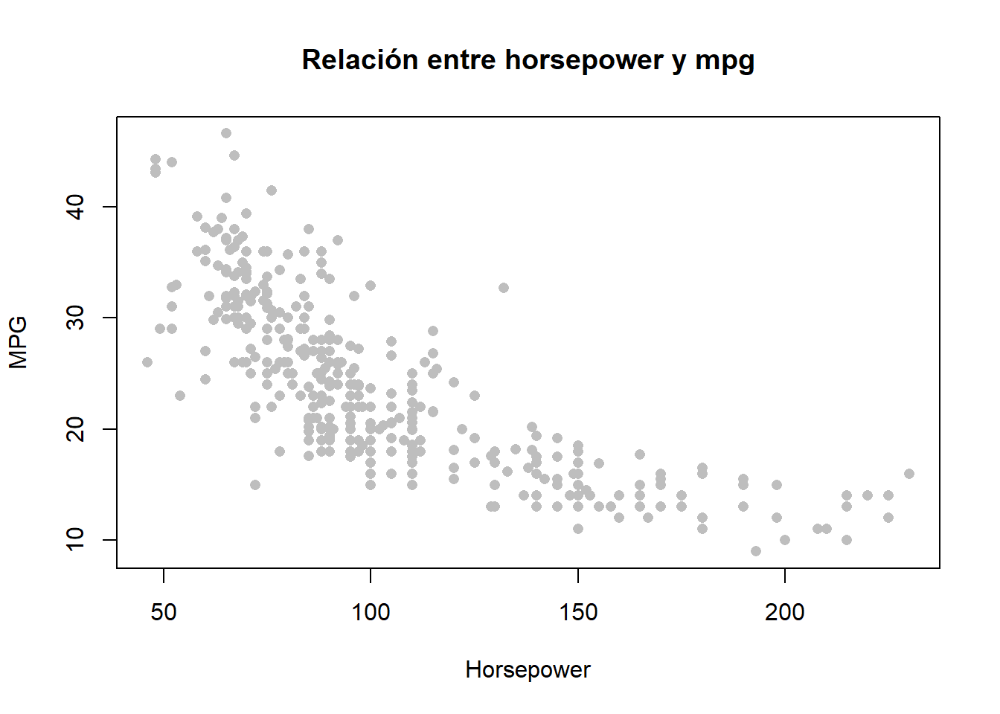

library(ISLR2)
library(splines)
data(Auto)
Auto <- na.omit(Auto)
n <- nrow(Auto)
summary(Auto) mpg cylinders displacement horsepower weight
Min. : 9.00 Min. :3.000 Min. : 68.0 Min. : 46.0 Min. :1613
1st Qu.:17.00 1st Qu.:4.000 1st Qu.:105.0 1st Qu.: 75.0 1st Qu.:2225
Median :22.75 Median :4.000 Median :151.0 Median : 93.5 Median :2804
Mean :23.45 Mean :5.472 Mean :194.4 Mean :104.5 Mean :2978
3rd Qu.:29.00 3rd Qu.:8.000 3rd Qu.:275.8 3rd Qu.:126.0 3rd Qu.:3615
Max. :46.60 Max. :8.000 Max. :455.0 Max. :230.0 Max. :5140
acceleration year origin name
Min. : 8.00 Min. :70.00 Min. :1.000 amc matador : 5
1st Qu.:13.78 1st Qu.:73.00 1st Qu.:1.000 ford pinto : 5
Median :15.50 Median :76.00 Median :1.000 toyota corolla : 5
Mean :15.54 Mean :75.98 Mean :1.577 amc gremlin : 4
3rd Qu.:17.02 3rd Qu.:79.00 3rd Qu.:2.000 amc hornet : 4
Max. :24.80 Max. :82.00 Max. :3.000 chevrolet chevette: 4
(Other) :365 # GRÁFICO 1: RELACIÓN ENTRE VARIABLES
plot(Auto$horsepower, Auto$mpg,
pch=16, col="gray",
xlab="Horsepower",
ylab="MPG",
main="Relación entre horsepower y mpg")